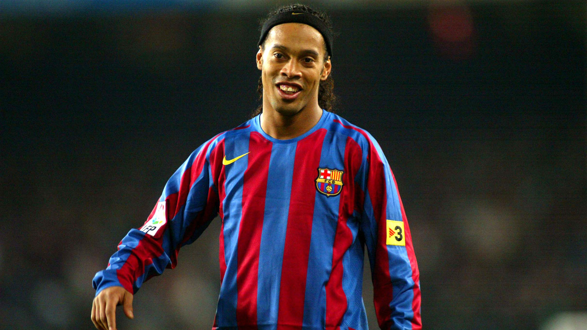

Futbol başarıları ve başarısızlıklarıyla komplike,dünyada en çok takip edilen spor dallarından biri olduğunu bahsetmiştik.Şimdi gelin futbol denince akla gelen 3 isme bakalım.
Ronaldinho Gaúcho

Ronaldo de Assis Moreira (d. 21 Mart 1980), bilinen adıyla Ronaldinho (Portekizce telaffuz: [ʁonawˈdʒĩɲu]) veya Ronaldinho Gaúcho, Brezilyalı eski futbolcudur.
Çoğunlukla ofansif orta saha mevkinde oynadı, zaman zaman forvet ve kanatta görev aldı. Kariyerinin büyük bir bölümünü Avrupa kulüplerinden Paris Saint-Germain, Barcelona ve Milan'da geçirdi, aynı zamanda Brezilya millî futbol takımı için de oynadı. Ronaldinho, 2 kez FIFA Dünyada Yılın Futbolcusu ve Ballon d'Or ödülünü kazandı. Çevikliği, hızı, top sürme yeteneği ve top sürmenin püf noktalarını kullanması, röveşata vuruşları, bakmadan verdiği pasları ve serbest vuruşlardaki isabet oranı nedeniyle teknik becerileri ve yaratıcılığıyla ünlüdür.
Ronaldinho profesyonel futbol kariyerine 1998 yılında Grêmio'da başladı. 20 yaşında Paris Saint-Germain sözleşme imzaladı. Daha sonra 2003 yılında Barcelona ile anlaştı.